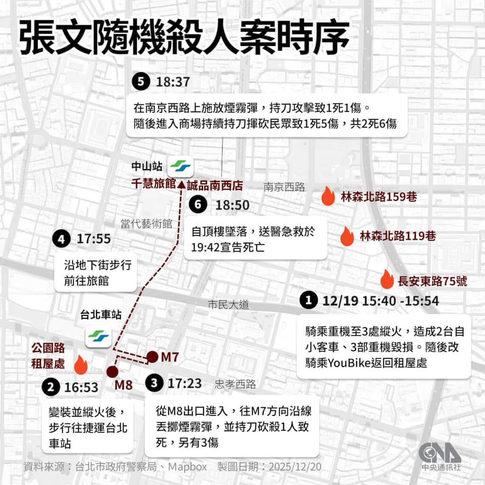

世界苦茶12月20日新闻 | 24条 | 台湾海基会董事长请辞

台湾海基会董事长请辞 | 台湾捷运持刀袭击报无恐袭疑虑 | 普京称掌握战略主动权 | 加沙食品供应有所改善
台湾海基会董事长请辞 | 台湾捷运持刀袭击报无恐袭疑虑 | 普京称掌握战略主动权 | 加沙食品供应有所改善
苦茶数据
美元兑人民币：7.03（昨日7.03，前日7.03）
美元兑日元：157.76（昨日157.47，前日155.56）
上证指数：休市（昨日3890，前日3876）
标普500指数：休市（昨日6834，前日6829）
比特币：88010（昨日88722，前日86790）
布伦特原油：60.16（昨日60.05，前日59.83）
中国新闻
• 广西忻城发生持刀伤人案造成三死一伤。
中国广西来宾市忻城县发生持刀伤人案，导致三人死亡，一人受伤。忻城县公安局在微信公号发布警情通报称，星期五早上7时许，当地关镇一小区内发生一起持刀伤人案件，35岁郭姓犯罪嫌疑人被控制，伤者送医救治。官方没有透露嫌犯的具体作案动机与受害者身份，称案件正在进一步侦办中。中国近年发生多起恶性伤人事件。去年11月，广东珠海体育中心内发生一起驾车蓄意撞人的重大恶性案件，导致35人死亡、43人受伤。今年8月，湖南耒阳市一名31岁男子在一所小学附近持刀伤人，造成两人死亡、三人受伤。今年6月，四川泸州一小区内也发生持刀伤人纵火案件，致一人死亡、两人受伤。
• 韩国吁中国为营造韩朝重启对话条件发挥作用。
中韩副外长在北京进行战略对话，韩国副外长朴润柱呼吁，中国为营造韩朝重启对话条件发挥作用。韩联社引述韩国外交部消息称，朴润柱星期四与中国副外长马朝旭进行中韩外交部战略对话，双方就韩中关系、朝鲜半岛问题、地区和国际局势等议题交换意见。这次对话是继去年7月之后再次举行，也是李在明政府今年6月上任以来的首次。两国副外长称，中韩领导人上月会谈成功举行，推动两国全面修复战略合作伙伴关系，希望两国基于紧密沟通，切实落实领导人会谈的后续措施。朴润柱阐明韩国政府的朝鲜半岛政策，并呼吁北京为营造首尔与平壤重启对话条件发挥作用。马朝旭则重申，中国将为朝鲜半岛和平与稳定继续发挥建设性作用。
• 具有里程碑意义的空中加油试验将中国无人机群的投送范围扩大至美国。
中国无人机项目的打击半径翻倍，可携带致命军事武器，覆盖华盛顿、纽约和迈阿密 此次加油试验使用了两架身份不明的无人机。一架作为加油机，配备加油吊舱；另一架为受油机。在高速编队飞行中，受油机在极端条件下利用高度鲁棒的基于视觉的导航系统，能够自主定位、跟踪并与加油机对接。该进展尤为重要，因为参与该试验的大学与中国先进无人机项目“九天”存在体制性联系。“九天”是一种重型无人平台，可携带200余枚滞空弹药。官方标称续航为7000公里，从中国基地出发无法直接抵达美国本土。
印太新闻
**• 台北随机袭击事件共致4死11伤，排除恐怖袭击可能。 **
警政署表示，嫌犯张文曾担任志愿役，2022年因酒醉遭国军汰除，今年7月因妨害兵役被通缉。其今年1月就在台北中正区租屋，12月17日入住大同区旅馆。目前认为张文是随机具计划性的袭击民众，初步清查无共犯。汽油桶及放式汽油弹推车都是网购，刀械来源还在追查。警方专案小组在张文中正区的租屋处发现4把刀械、已烧毁的笔记本电脑、5桶汽油桶、未发现手机。张文承租旅馆房间，则发现23瓶汽油瓶、2个有上锁的平板电脑、未发现手机。张文已2年多未与父母及哥哥联系，家人提到张文自幼对枪械武器有兴趣，经检视其父母家中确无张文的生活物品。有关案后在社交媒体出现的恐吓信，经查是从境外发布，已掌握6个IP，并组专案小组追查。
• 林中斌：特朗普与习近平将协议两岸和平统一。
台湾国防部前副部长林中斌星期五指出美国已发现在亚太地区的军力落后于中国大陆，故尽量避免用军事挑战解放军。而且面对明年不乐观的期中选举，“特朗普有求于习近平的，多于习近平有求于特朗普”。他研判，中国国家主席习近平会很有技巧地与美国总统特朗普达成大交易。若美国在后面施压，两岸政治对话、社会交流自然水到渠成，慢慢就达到两岸和平统一的目标。中华战略学会、政治大学国际事务学院两岸政经研究中心、中华民族团结协会和中华民国忠义同志会，星期五合办 “2026年世局论坛”，邀请林中斌和中华战略学会理事长李本京、中华民国妇女联合会主任委员雷倩、中华战略学会资深研究员张竞作专题报告。
**• 台湾，海基会董事长吴豊山宣布将于12月底卸任。 **
他回顾：去年11月就任后即与陆方联系，希望澄清“中华民国在九二共识中的位置”，对方仅答以“异中求同、搁置争议”；又提出希望与海协会张志军私下面谈，陆方表示理解用心良苦，但九二共识没有再厘清的必要，如果不要九二共识，应请台方提出新共识。对此，吴丰山“曾多方努力，但不得要领”。之后，他于今年7月10日提出希望赴东莞、昆山探访台商，但海协会已读不回。
知情者透露，“不得要领”是指，吴丰山提议的论述为“中华民族”“和平至上、两岸整合、兄弟分立、互利互惠、共存共荣”，赖清德当场表示其他内容都可尝试，但不能接受“中华民族”字眼。
7月吴传讯海协会后，又私下请一位亲中的“昔日同事”协调他的赴陆事宜，此事未经府院授权，又在大罢免之际，赖政府官员知晓后感到不可思议。赖清德12月12日约谈吴丰山，吴“体贴总统人事安排的困难”，同意请辞。赖清德感念其多年提携支持，将安排吴任总统资政。新任海基会董事长预计由苏嘉全接任。
• 日本的诊疗服务费将上涨3.09%。
日本的诊疗服务费将上涨3.09% 2025/12/19 日本政府将在2026年度的诊疗报酬修改中，把诊疗服务费提高3.09%，目前已启动最终协调。这是1996年度的3.4%以来、30年来的最高涨幅。将作为医疗机构应对通货膨胀和提高工资的资金。诊疗报酬的总额作为医疗费由国民负担，必须根据医疗一线的实际情况进行适当分配。日本首相高市早苗、厚生劳动相上野贤一郎、财务相片山皋月12月19日在首相官邸进行协商并做出决定。将在12月内汇总的2026年度预算案的阁僚磋商中正式敲定。日本厚生劳动省建议涨幅定为3%左右，财务省则提出超过2%的水准。
• 日首相官邸人士非公开表示：日本应该拥核。
日本首相官邸 12月18日，一位在高市政府中负责安全保障政策的首相官邸人士对媒体表示：「我认为应该拥有核武器」，表明了日本有必要拥有核武器的立场。此番发言是在以非公开为前提的媒体非正式采访中做出的。同时，他还提及并不现实。在非正式采访中，当媒体询问这位人士对拥有核武器的看法时，他表示拥有核武器是必要的，并解释道：「最终能依靠的还是我们自己」。
• 蓝白推赖清德弹劾案 恐难跨台湾宪政门槛。
针对台湾行政院长卓荣泰宣布不副署《财政收支划分法》，立法院司法及法制委员会星期四通过谴责案，提案委员具名移请监察院弹劾卓荣泰。国民党、民众党立法院党团隔天召开记者会，宣布提案弹劾总统赖清德。不过，依台湾现行法律制度，这两项弹劾行动恐难跨过门槛。依现行制度，监察院得对违法失职的中央及地方公务人员提出弹劾；弹劾成立后，可处以免职、降级或扣薪等惩戒。但行政院长及一般公务员并非立法院弹劾对象，立法院若认为其违法失职，只能将相关事证移送监察院，由监察委员决定是否启动弹劾。然而，现任监委是同为民进党籍的前任总统蔡英文任命，外界普遍认为，对卓荣泰启动弹劾的可能性不大。
科技新闻
• 特拉华州最高法院恢复了埃隆·马斯克那高达1390亿美元的巨额薪酬方案。
特拉华州最高法院恢复了2018年授予特斯拉首席执行官埃隆·马斯克的一份巨额薪酬方案，此前该方案已两次被下级法院判为无效。该方案授予马斯克购买3.03亿经拆股调整股份的期权，按周五收盘价计价值1390亿美元。审理此案的特拉华衡平法院大法官凯瑟琳·麦考密克曾裁定，尽管特斯拉股东两次批准该薪酬计划，但其规模对股东不公平。她写道，特斯拉董事会“承担证明该薪酬计划公平性的举证责任，但未能满足其举证义务。”即便股东再次投票支持该方案，麦考密克仍第二次以不公平为由驳回该方案。但特拉华州最高法院周五裁定，下级法院在其意见中存在错误，废除2018年薪酬方案“有失公允”。
• 美国议员要求将DeepSeek和小米列入与中国军方有关联的企业名单。
包括多位众议院委员会主席在内的九名共和党议员本周致函美国国防部长皮特·赫格塞斯，敦促将十几家中国科技公司加入五角大楼所谓与中国军方有关联公司的名单。尽管被列入这一每年更新的五角大楼名单并不意味着立即实施禁令，但它向美国实体发出强烈警示，提示与相关公司开展业务的风险，并可能促使其他行政部门和国会施加更多限制。议员们点名的其他公司包括电池制造商国轩高科；芯片企业华虹半导体、Kingsemi 与深南电路；显示与成像公司京东方科技集团与天马微电子；传感、监控与机器人公司 CloudMinds、LeiShen、镭神智能、速腾聚创、天地伟业、Unitree Robotics；以及生物科技公司金斯瑞生物。
经济新闻
• 受对债务上限的担忧影响，中国将持有的美国国债削减至2008年以来的最低水平。
随着对美国债务可持续性和美联储独立性担忧加剧，人民币计价资产信心进一步受损，中国10月持有的美债降至17年来最低水平。美国财政部周四公布的数据显示，中国10月的美债余额降至6887亿美元，低于9月的7005亿美元。10月数据为自2008年11月以来的最低水平，较中国金融数据提供商Wind称的2013年11月近1.32万亿美元峰值下滑逾47%。今年3月，中国在外国持债国中已降至第三位，落后于日本和英国，延续了自美国前总统特朗普首个任期开始的逐步撤出走势。前中国央行顾问于永定周二在一篇文章中警示，与美元资产相关的风险正在上升。
• 欧盟推迟与南方共同市场签署协议，延续了长达25年的“诅咒”。
欧盟与南美南方共同市场集团之间的大型贸易协议周四再次被推迟，内部长期存在的分歧再次胜过促成协议的努力。意大利总理乔治亚·梅洛尼在最后时刻的态度转变，打乱了原定于12月20日与梅尔科苏国家签署协议的自定目标——决策被推迟到一月中旬，POLITICO 首次报道。此次延迟表明，经过二十年的谈判和无数次反复，旨在在欧盟与巴西、乌拉圭、巴拉圭和阿根廷之间建立全球最大自由贸易区之一的欧盟—梅尔科苏协议，在欧洲仍然是一个政治雷区。
• 金价再次接近最高点，巴西央行买入量超过中国。
黄金价格再次接近最高点。市场关注的是美国降息预期，以及各国央行强烈的购买意愿。巴西央行时隔3年重启买入黄金，2025年的买入规模超过中国。在10月巴西央行是各国央行中今年买入黄金最多的。由于利用交易所交易基金等，部分买入手段变得难以看清，因此实际买入规模有可能超过统计值。作为黄金价格国际指标之一的伦敦现货价格在12月17日的交易中,比前一天上涨45.13美元，涨至每盎司4348.66美元。在10月份创出最高点后，金价被获利抛售压制，一度跌破4000美元，但目前涨势再次加强。
• 川普提出「住房价格改革」。
美国总统川普12月17日面向全国民众发表电视演讲。在圣诞假期前，他列举了新政府的「成果」，并宣布将在年初推出应对房价上涨的改革，内容显露出民众对生活成本高企的不满的危机感。美国总统面向全国的电视演讲通常在发布重大政策或军事行动时进行。川普在白宫接待厅与外国首脑会晤期间，讲话约20分钟。川普列举外交、移民限制、关税政策，强调「美国受到尊重，并以空前的力量复兴。世界将迎来前所未有的经济繁荣」。
• 丰田明年起将「逆进口」3款美国产车到日本销售。
丰田将逆向进口的「凯美瑞」 | 丰田计划自2026年起将美国生产的「凯美瑞」等共计3款车型进口到日本销售，已确定相关方针。此举既可应对将对日贸易逆差视为一大问题的美国川普政府，也能增加顾客的选项。本田和日产汽车也在探讨类似做法，日本车企增加在美生产的趋势正在扩大。从海外进口日本车被称为「逆向进口」。被丰田列入对象的车型除凯美瑞外，还包括皮卡「坦途」和SUV「汉兰达」。销售方式和价格尚未确定。3款车型目前均未在日本国内销售，对顾客而言，选项将增加。但对丰田来说，盈利是一大课题。
俄乌战争
• 欧盟未能就用被冻结的俄罗斯资产资助乌克兰达成协议。
在布鲁塞尔举行的欧盟峰会上，经过15小时的讨论，欧洲领导人未能就利用被冻结的俄罗斯资产向乌克兰提供数十亿欧元财政援助达成协议。此举对欧盟团结是一大打击，领导人现在将考虑基于共同借款的解决方案，在两年内向乌克兰提供900亿欧元。这一计划不包括匈牙利、斯洛伐克和捷克。此前长期反对此类资助的德国已表示支持。欧洲理事会主席安东尼奥·科斯塔在X上写道：“决定批准在2026–2027年向乌克兰提供900亿欧元支持。
• 普京誓言：如果西方尊重俄罗斯，俄罗斯将不再发动战争。
俄罗斯总统弗拉基米尔·普京表示，如果俄罗斯受到尊重，乌克兰之后就不会再有战争，并称有关莫斯科计划攻击欧洲国家的说法是“无稽之谈”。在一场近四个半小时的电视活动中，BBC的史蒂夫·罗森伯格问及是否会有新的“特别军事行动”——普京用来指代对乌克兰全面入侵的术语。普京断言：“如果你们尊重我们，尊重我们的利益，就像我们一贯努力尊重你们的利益一样，就不会有行动。” 本月早些时候，普京曾表示俄罗斯并不计划与欧洲开战，但如果欧洲人愿意，俄罗斯“现在”就准备好了。在周五回答BBC俄国编辑的提问时，普京还补充说，只要“不像在北约东扩问题上那样欺骗我们”。
• 敖德萨州遭俄罗斯弹道导弹袭击，至少7人死亡、15人受伤。
编者按：此事仍在发展中。俄罗斯于12月19日晚袭击了乌克兰南部敖德萨州的港口基础设施，州长奥列格·基佩尔报告称，袭击导致至少7人死亡，15人受伤。基佩尔在12月19日晚间表示，俄方用弹道导弹“对该地区的一个港口设施进行了大规模打击”。袭击造成7人死亡，另有15人因伤被送医。基佩尔称，袭击还引发了设施停车场内货运卡车的起火。救援部门正在现场工作，但持续的空袭警报干扰了救援行动。乌克兰空军在当地时间12月19日21时警告存在俄弹道导弹威胁。几分钟后。
• 普京召开年度记者会 称“完全掌握战略主动权”。
普京召开年度记者会 称“完全掌握战略主动权” 2025年12月19日在他精心安排的年度新闻发布会上，普京宣称，俄军已经“完全掌握战略主动权”，并警告欧盟扣押俄罗斯资产将适得其反。普京周五强调，俄罗斯部队正在乌克兰战场推进，并表示如果基辅不同意俄罗斯的和平谈判条件，克里姆林宫有信心通过军事手段实现目标。在他精心安排的年度新闻发布会上，普京宣称，俄军已经“完全掌握战略主动权”，并将在年底前取得更多进展。在2022年侵略战争初期，乌克兰部队挫败了规模更大，装备更精良的俄罗斯军队试图攻占首都基辅的行动。
世界新闻
• 查理·柯克的遗孀埃里卡宣布支持J·D·范斯竞选总统。
保守派活动家查理·柯克的遗孀表示，他创立的“转折点美国”组织将帮助JD·范斯在2028年当选总统，尽管现任美国副总统尚未宣布参选。埃里卡·柯克周四的背书发表在“转折点”年度America Fest大会的首日，这是自她丈夫9月遇刺身亡以来该组织规模最大的一次集会。“我们将以最响亮有力的方式，让我丈夫的朋友JD·范斯成为第48任总统，”柯克说道。特朗普是第47任总统。范斯计划于周日在大会上发表演讲。“转折点”被认为在帮助共和党人唐纳德·特朗普扩大支持联盟，促成其2024年总统胜选上发挥了作用。
• 玻利维亚最大城市因反对燃油涨价的运输罢工陷入停摆。
玻利维亚最大城市因反对燃油涨价的交通罢工陷入停摆 玻利维亚最大城市拉巴斯和圣克鲁斯的街头周五陷入停顿，公共交通工人发起罢工，抗议新政府下令将燃油价格上调100%。食品和运输价格飙升，工人要求官员撤销燃油涨价。在拉巴斯，示威者封堵路口；在其他城市，公共交通停运，出现长队，居民参加游行加入抗议。运输工会领导人埃德森·瓦尔德斯表示，如果政府不恢复汽油和柴油补贴，抗议可能在未来几天蔓延到全国。“政府给人民送上了最糟的圣诞礼物，”他说。
• 专家称，加沙大规模饥荒蔓延已被遏制，但该地带仍面临饥饿。
避免了加沙地带饥荒蔓延，但当地巴勒斯坦人仍面临饥饿，专家称 以色列特拉维夫——全球粮食危机权威机构周五表示，加沙地带的饥荒蔓延已被避免，但局势仍然危急，整个巴勒斯坦领土仍面临饥饿风险。该机构最新报告由综合粮食安全分级发布，数月前该组织曾表示，加沙城已发生饥荒，若不实现停火并解除人道主义援助限制，饥荒可能蔓延全境。报告称，在以色列与哈马斯战争10月停火后，粮食安全与营养状况出现“显着改善”，目前未检测到饥荒。然而，IPC警告局势“高度脆弱”，整个加沙地带仍面临饥饿威胁，预计截至4月将有近2000人处于灾难性饥饿水平。在最坏情形下，包括冲突复燃和援助中断，加沙全境都有发生饥荒的风险。
• 周五是公布爱泼斯坦档案的最后期限。
周五是公开爱泼斯坦档案的最后期限，以下是可预期的情况 一位司法部高级官员表示，政府不会在周五的最后期限前完整公布关于杰弗里·爱泼斯坦生平与死亡的全部档案。副检察长托德·布兰奇在周五早间接受福克斯新闻采访时表示，他预计“数十万份文件”今天会被公布，随后还会有数十万份文件陆续释放。布兰奇说：“我预计在接下来的几周内我们会继续发布更多文件。所以今天是数十万份，接下来的几周我预计还会有数十万份。” 根据上个月特朗普总统签署的《爱泼斯坦档案透明法》，司法部长被指示“以可搜索和可下载的格式公开在司法部掌握的、与爱泼斯坦及其合作者吉斯莱恩·马克斯。